Trending Categories
Transforming static insights into a real-time, action-oriented experience that helps location teams identify and act on customer experience issues faster.
Overview
About Reputation
Reputation is a SaaS platform that helps businesses manage customer experience and online reputation by centralizing reviews, surveys, sentiment analysis, social engagement, and operational workflows.
Mobile Users
While the web platform served power users and analysts, the mobile app was designed for a different behavioral context — on-the-go operational users (ex. Location managers, Review requesters, Field advisors, Customer service and engagement teams responding to reviews/surveys, and Regional operators.
Unlike web users who focused on reporting, exporting, and analysis, mobile users needed: fast clarity, immediate relevance and highly actionable insights in real time
This project focused on redefining how insights were delivered in mobile to better support frontline CX decision-making.
Problems
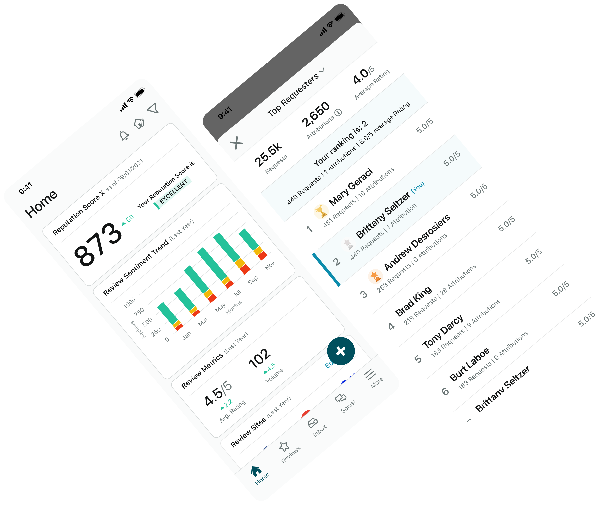
Mobile Was Not a Primary Insights Touchpoint for Users
Despite strong platform capabilities, the mobile app was not being adopted as a habitual tool for monitoring customer experience insights. Even high-frequency users such as location managers and general managers were not returning regularly. The main use of the app was responding to customers, sending out review requests, and creating posts.
Lack of Actionable, Real-Time Direction
Insights that were available in the mobile app at the time functioned more as static reporting snapshots than actionable operational signals, leaving users without clear prioritization, directional trend visibility, contextual relevance to their location, or quick guidance around what actions needed attention next.
High Traffic, Low Stickiness for Insights by Category
On the web platform, internal product data revealed that “Insights by Category” drove the highest overall traffic and user interest, but it had low repeat engagement per user, suggesting customers valued insights conceptually, but the experience lacked the same problem mobile insights had to sustain ongoing engagement.
Research Insights
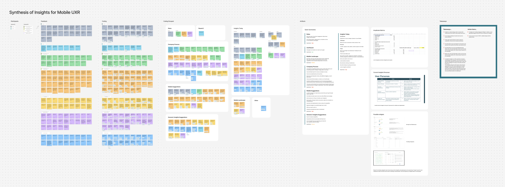
We conducted explorative interviews with enterprise customers to explore and understand our current Insights workflows. We interviewed individuals from brands such as JD Power, Kaiser, Mitchell and Butlers and Lookers .
Key Learnings
→ Corporate users are not the primary mobile insight consumers. They rely heavily on exports, Excel analysis, and reporting workflows.
→ Location managers are the true action layer. They need fast, digestible insights they can use in daily operational standups.
→ Insights are most valuable when tied to categories and customer voice (quotes).
→ Self-sufficiency at the location level is a major business goal. Organizations wanted frontline teams to: identify issues themselves, reduce dependency on corporate reporting and act faster on customer feedback.
Solutions
Trending Categories was introduced as a mobile-first CX intelligence experience for location managers that transformed static performance snapshots into directional customer experience signals, helping users quickly identify what was improving, declining, and requiring immediate operational attention.
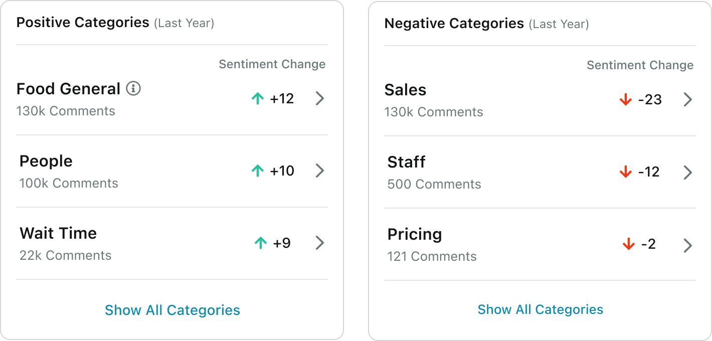
Solving for Basic Insights by Turning Them into Directional Signals
Traditional Category Insights on web focused primarily on static category strength, sentiment, and historical performance, while the new Trending Categories reframed the experience around directional movement, relative change over time, and prioritization of high-impact issues — shifting the product from retrospective reporting toward real-time operational awareness. Added in web too.
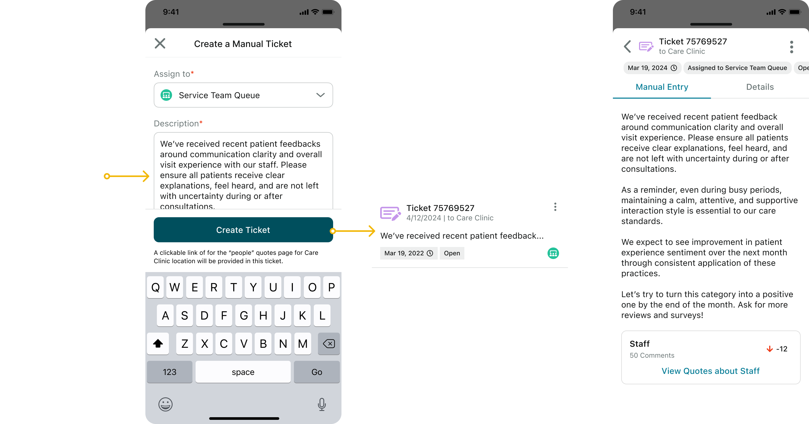
Solving for Location-Level Actionability
The experience was designed around real operational workflows, particularly daily location standups where managers review recent customer feedback, identify priority issues, and align or assign staff actions, with Trending Categories surfacing evolving location-level problems, AI summaries providing quick understanding of emerging themes, connecting insights to real customer quotes, and enabling fast decision-making without requiring deep analysis or traditional reporting workflows.
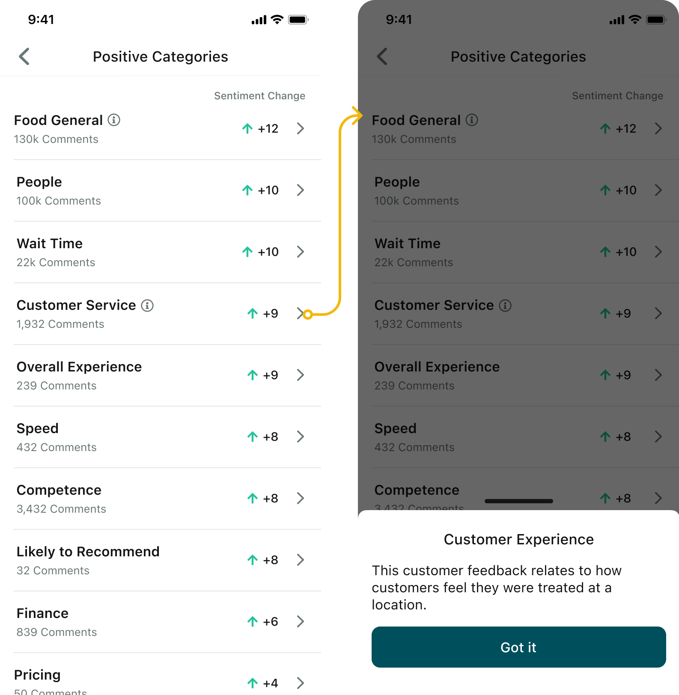
Solving Engagement Through Frequency and Relevance
A core challenge was ensuring insights updated with enough “signal freshness” to create repeat mobile engagement, leading us to prioritize high-volume categories, frequently refreshed sentiment signals, and meaningful ranking movement so users consistently returned to insights that reflected current operational realities rather than static historical dashboards.
Introducing Lightweight Competitive Context
To further drive engagement, the experience introduced lightweight competitive framing through category performance comparisons, implicit benchmarking, and visibility into relative location standing, aligning closely with existing organizational behaviors around incentives, leaderboards, and cross-location performance tracking.
Reusing Existing Insight Infrastructure
Retrospective
Mobile DAU/MAU (Doubled, 20% → 40%)
Increase of mobile’s DAU (17% → 34% / 7k→ 14k users)
This project delivered strong business impact and helped the mobile team achieve our North Star KPIs around engagement and adoption. It reinforced the importance of designing for behavioral context rather than replicating web workflows, focusing instead on fast, actionable mobile insights for operational users. By aligning research, behavioral data, and product strategy, Trending Categories transformed mobile from a passive reporting tool into an active daily CX decision-making experience.
Interactive Prototype
Click around this live prototype I made for this feature!
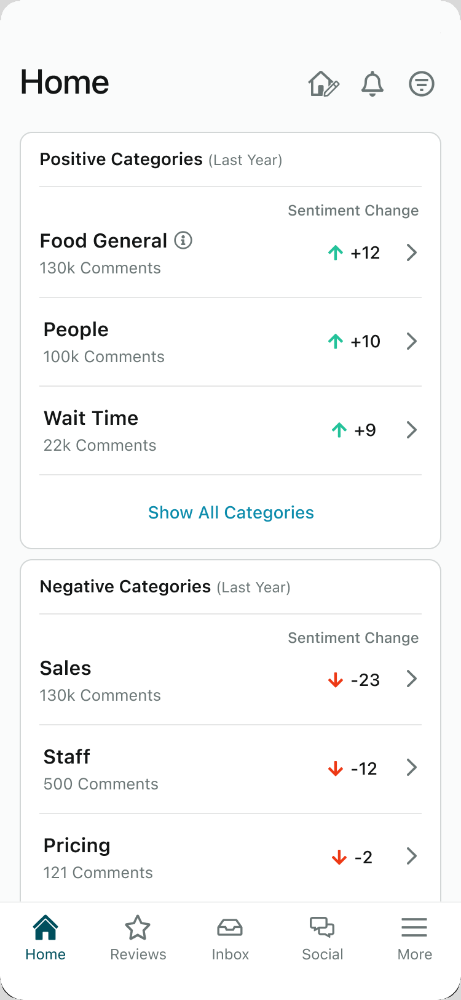
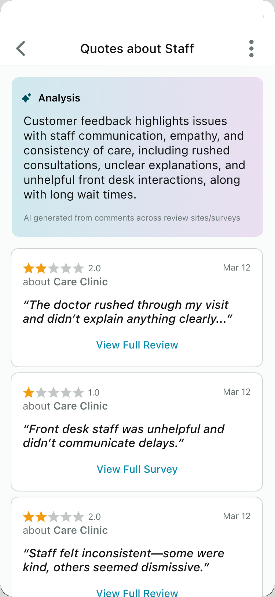
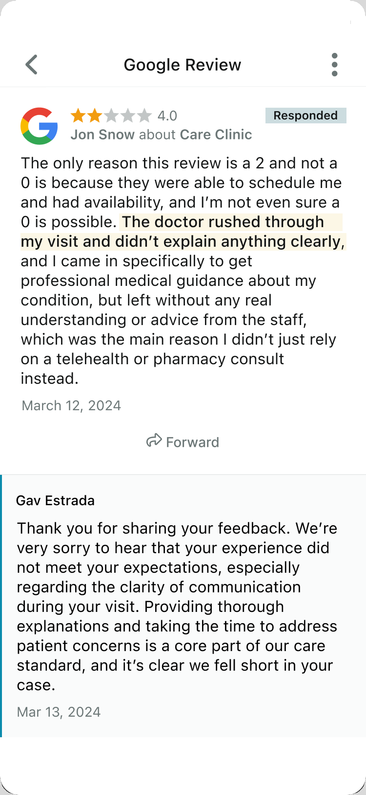
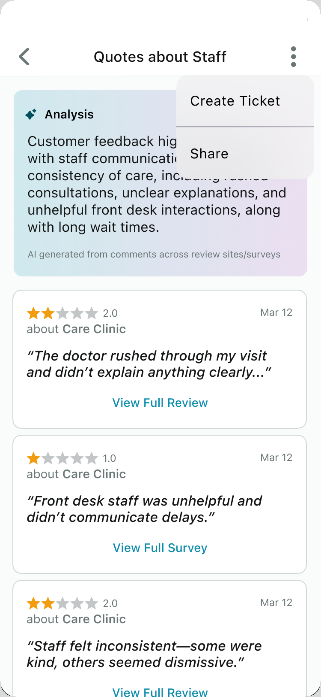
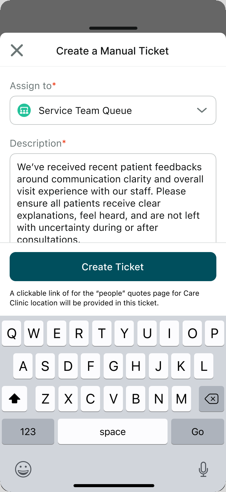
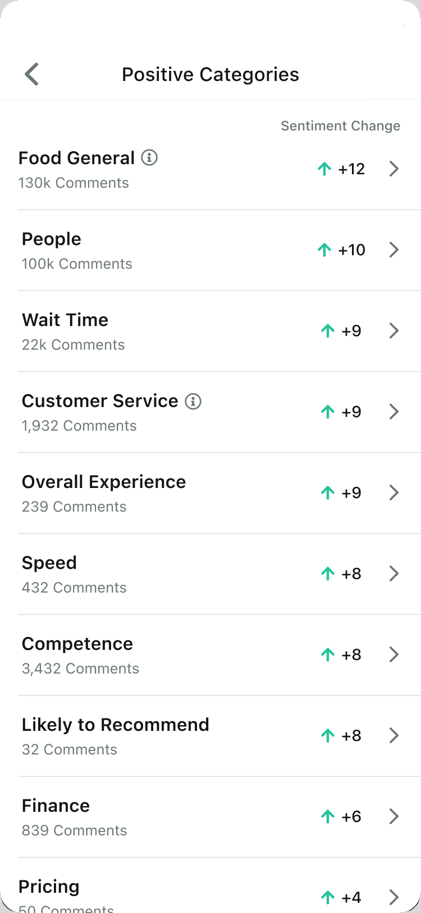
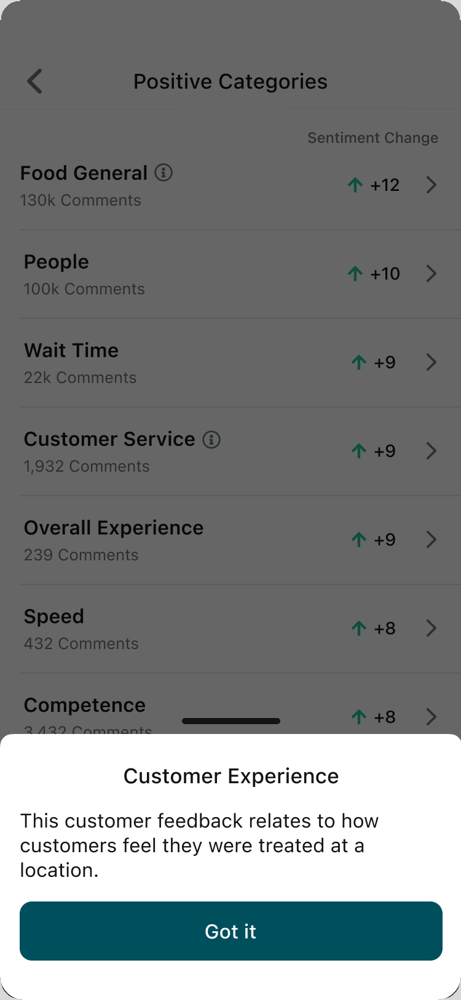
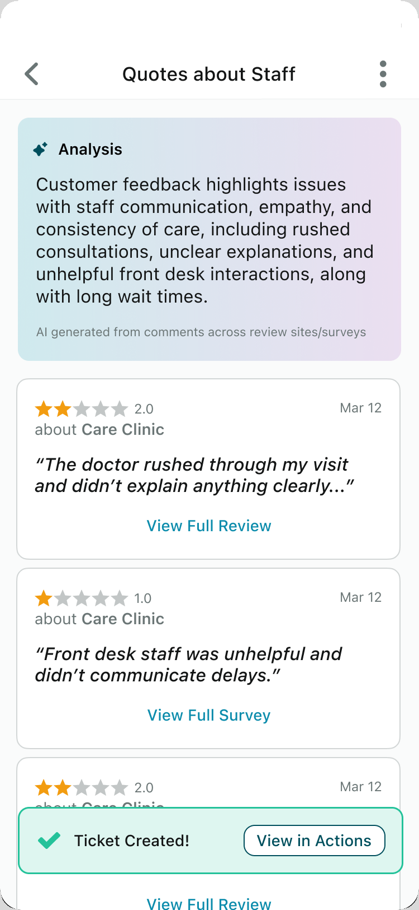
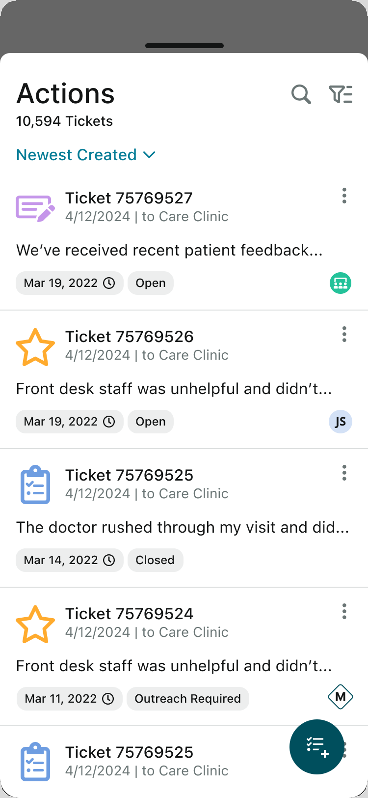
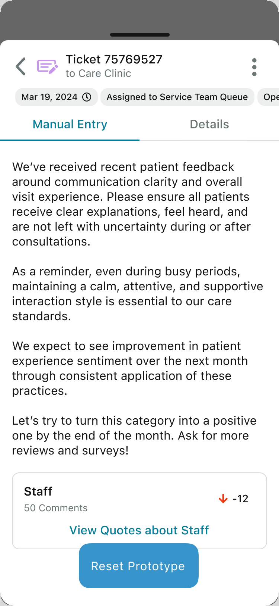